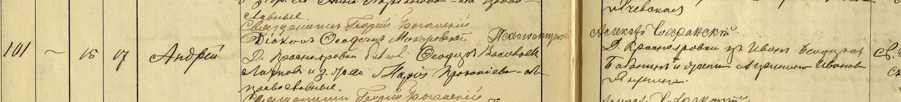

Андрей Федорович Лотков

Родился 27 августа 1897 г. в д. Краснояровка Борисоглебского уезда Тамбовской губернии (ныне Тамбовская область). Ещё в младенчестве Андрей остался без отца, когда тот скончался от туберкулёза. А потому воспитал его отчим, Федот Остросаблин. Семья была многодетной. Судя по всему, помимо родной сестры Матрёны (1892) и брата Григория (1899), в одном доме с Андреем жили его сводные и единоутробные братья и сёстры. В детстве Андрей, очевидно, получил начальное образование в приходской школе, а потому считался грамотным.
Не позже 1919 г. Андрей женился на своей ровеснице — Устинье Подковыровой* — и стал отцом пятерых детей. Их имена: Дарья (1920–2000), Мария (1922–2003), Иван (1925–2000), Виктор (1928) и Анна (1931–2009).
До начала войны Андрей Фёдорович оставался в Краснояровке. На фронт он был призван не сразу, а лишь спустя полтора года после начала войны — в конце 1942 г. К тому времени ему уже исполнилось 45 лет. Сведения, имеющиеся на сайте «Память народа», позволяют отследить отдельные эпизоды боевого пути Андрея Фёдоровича. Так, в марте 1944 г., находясь в звании рядового, он несёт службу в составе 245-го стрелкового полка. В этот период его полк ведёт бои на Нарвском плацдарме в Эстонии, примерно в 130 км от совсем недавно освобождённого Ленинграда. Как раз в эти дни Андрей Фёдорович получает ранение (возможно, в голову) и попадает в сортировочно-эвакуационный госпиталь № 2222, расположенный в больнице им. Мечникова в Ленинграде. Но там раненый, вероятно, надолго не задерживается, и уже 29 марта его пересылают в челюстно-лицевой эвакогоспиталь № 1360 на улице Блохина в Ленинграде, развёрнутый в здании школы. Там Андрей Фёдорович находится на лечении примерно три недели — до 17 апреля, после чего выбывает в так называемый батальон выздоравливающих 36-й запасной стрелковой дивизии. Последние сведения об Андрее Фёдоровиче приходятся на конец мая 1944 г. В этот период он, вероятно, по-прежнему находится в составе войск ленинградского фронта. В это же время в боях участвует и его старший сын Иван.
Домой Андрей Фёдорович не вернулся, хотя каких-либо сведений о его гибели или пропаже без вести не имеется. Так что дальнейшая его судьба остаётся неизвестной. Существует даже версия, что после войны он якобы мог обосноваться на Сахалине.
Так или иначе, дети Андрея Фёдоровича навсегда потеряли с ним связь и после войны разъехались по разным местам: Дарья сначала отправилась в Донбасс, а затем поселилась в Подмосковье, Виктор осел в Калининграде, Иван обосновался в Кременчуге, а Мария и Анна до 1970-х гг. оставались в Краснояровке, пока не переехали в соседний г. Уварово. По какой-то причине дети Андрея Фёдоровича вспоминали об отце неохотно, поэтому известно о нём немного.
* Проследив родословное древо семьи Лотковых, можно прийти к выводу, что Андрей и Устинья приходились друг другу дальними родственниками, что вовсе не удивительно, если учесть, что их предки долгое время жили в одном и том же селении. Фактически Андрей Фёдорович приходился пятиюродным братом своей тёще — Марии Никифоровне (~1876 г.р.), а Устинья Михайловна, в свою очередь, была пятиюродной сестрой своему свёкру — Фёдору Васильевичу Лоткову (~1871–1899).